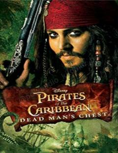

POKapitan Jek Chittakning Davy Jons la'natidan qutulish uchun qilgan xavfli sarguzashtlari.
Kapitan Jek Chittak o'zining afsonaviy kemasi Qora Marvaridni qaytarib olganidan so'ng, Davy Jonsning dahshatli la'nati bilan to'qnash keladi. U o'z jonini qutqarish uchun sirli kalitni izlashga majbur bo'ladi, shu bilan birga Elizabet Suon va Uill Tyorner ham qiyin vaziyatga tushib qolishadi. Bu hikoya dengiz qaroqchilari, sehrli kuchlar va sarguzashtlarga boy dunyoni tasvirlaydi.